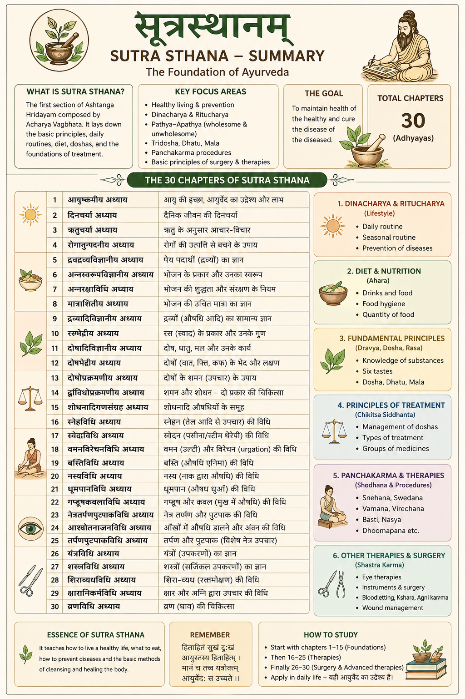

1. सूत्रस्थानम्

- Chapter 1–4 → basics
- 6–8 → food
- 10–12 → dosha
- आयुष्कामीय अध्याय — आयु की इच्छा / स्वस्थ जीवन का उद्देश्य
- दिनचर्या अध्याय — दैनिक जीवन की दिनचर्या
- ऋतुचर्या अध्याय — ऋतु के अनुसार जीवन शैली
- रोगानुत्पादनिय अध्याय — रोगों की रोकथाम
- द्रवद्रव्यविज्ञानीय अध्याय — तरल पदार्थों का ज्ञान
- अन्नस्वरूपविज्ञानीय अध्याय — भोजन के प्रकार व गुण
- अन्नरक्षाविधि अध्याय — भोजन की शुद्धता / सुरक्षा
- मात्राशितीय अध्याय — भोजन की सही मात्रा
- द्रव्यादिविज्ञानीय अध्याय — द्रव्यों (औषधि आदि) का ज्ञान
- रसभेदीय अध्याय — रस (स्वाद) का वर्गीकरण
- दोषादिविज्ञानीय अध्याय — दोष, धातु, मल का ज्ञान
- दोषभेदीय अध्याय — दोषों के प्रकार
- दोषोपक्रमणीय अध्याय — दोषों का उपचार
- द्विविधोपक्रमणीय अध्याय — दो प्रकार की चिकित्सा (शमन/शोधन)
- शोधनादिगणसंग्रह अध्याय — शोधन आदि औषध समूह
- स्नेहविधि अध्याय — स्नेहन (तेल आदि उपचार)
- स्वेदविधि अध्याय — स्वेदन (स्टीम/पसीना चिकित्सा)
- वमनविरेचनविधि अध्याय — वमन व विरेचन विधि
- बस्तिविधि अध्याय — बस्ति (एनिमा चिकित्सा)
- नस्यविधि अध्याय — नस्य (नाक द्वारा उपचार)
- धूमपानविधि अध्याय — औषध धूम्र सेवन
- गण्डूषकवलविधि अध्याय — गण्डूष / कवल (mouth therapy)
- नेत्रतर्पणपुटपाकविधि अध्याय — नेत्र चिकित्सा विधि
- आश्चोतनाञ्जनविधि अध्याय — आँखों में औषध प्रयोग
- तर्पणपुटपाकविधि अध्याय — पोषण चिकित्सा (विशेषकर नेत्र)
- यंत्रविधि अध्याय — यंत्र (उपकरण) का उपयोग
- शस्त्रविधि अध्याय — शस्त्र (सर्जिकल उपकरण)
- शिराव्यधविधि अध्याय — रक्तमोक्षण (vein puncture)
- क्षाराग्निकर्मविधि अध्याय — क्षार व अग्नि द्वारा उपचार
- व्रणविधि अध्याय — घाव (wound) की चिकित्सा